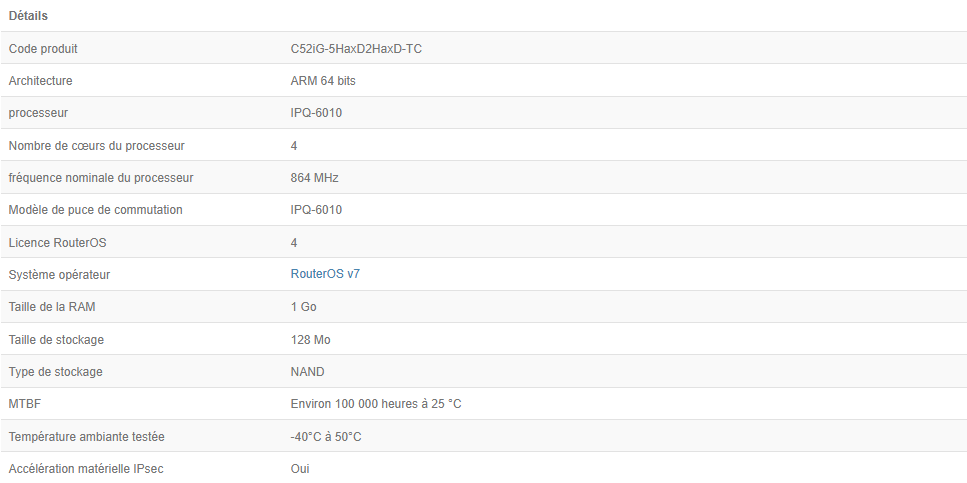
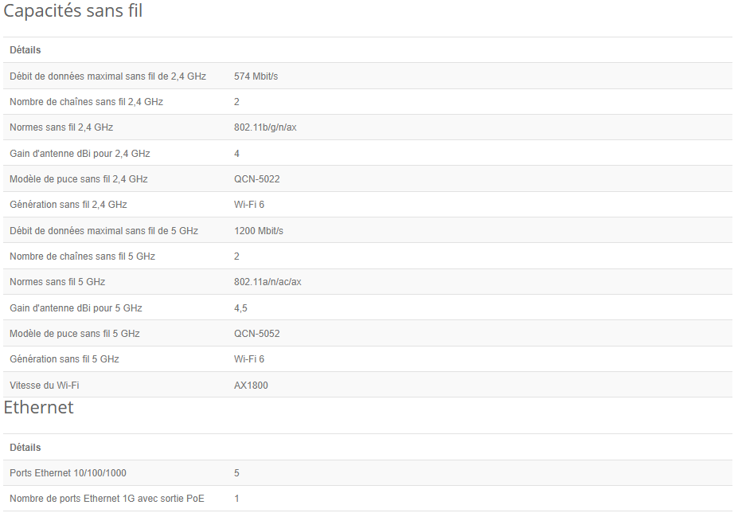
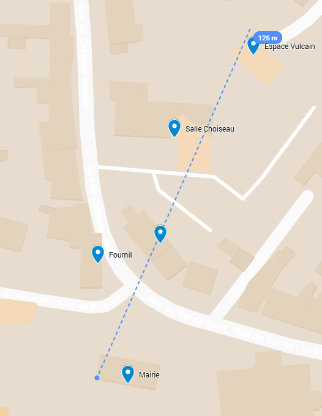

Ce cahier des charges définit les exigences et spécifications pour l'installation d'un réseau Wi-Fi public dans notre territoire. Les éléments suivants doivent être respectés :
Pour commencer le routeur mis en place par CloudSpot dans la solution Nano est le hAP ax² avec ces caractéristiques :
 Le routeur a une antenne wifi intégrée, mais pour un soucis de manque d'options de configurations nous allons utiliser des antennes UniFi
Veuillez consulter la carte ci-dessous pour voir les emplacements prévus pour les points d'accès Wi-Fi :
La distance la plus longue théorique de cette installation est d'environ 125 m. Du point le plus éloigné de la Mairie, du point le plus éloigné de l'espace Vulcain
Les antennes sont diposées dehors et se fournissent entre-elles le réseau wifi (Comme la disposition au camping de Daon). Cette solution permettrai de n'avoir besoin que de un pack Nano et de 5 antennes UniFi, pour autant elle a des désavantages ;
- Dégradations plus importantes dehors dû aux Intempéries
- Des réglementations à respecter vis-à-vis des fréquences utilisées et de la puissance maximale autorisée (100Mv)
Les antennes seraient reliées entre-elles à l'aide d'un câble Ethernet. Les antennes seront à l'intérieure du batiment, donc non exposées aux intempéries. Cette solution aurait, donc, un pack Nano , 5 antennes UniFi ainsi que de 5 switch, pour autant elle a des désavantages ;
- Compliqué de faire passer des câbles entre les batiments, ou communiquent-ils déjà ?
- Des Switch à chaque antenne, la solution coutera plus chère
Comme la solution une, mais en disposant les antennes à l'intérieure, cette solution aurait la même composition que la solution une, pour autant elle a persque les même désavantages que la solution une hormis la dégradation, tel que ;
- Perte du signal au fur et à mesure, puisque celle-ci seraient à l'interieure, donc le signal aura plus de mal à passer en exérieure
- Dû a l'épaisseur des murs le signal perdrai en qualité au fil des retransimitions
Cette solution mélange à la fois la solution une et la deux, celle-ci consiste à brancher la Mairie et un des deux sites :
* la salle de Choiseau ou
* la salle du conseil
Mais le site choisit ainsi que la Mairie en ayant toute les autres antennes qui sont en redondance. Cette solution aura donc besoin du Pack Nano, 5 antennes et un switch. Mais il y a aussi une façon de faire ;
- Option 1 : Les antennes sont disposées dehors (on connait désormais leurs désavantages)
- Option 2 : Les antennes snt disposées à l'interieure (on connait désormais leurs désavantages)
Attention, ces simulations ont été effectuées en considérant que tout les murs des bâtiments aient un dB maximale de 15dB
La solution 3